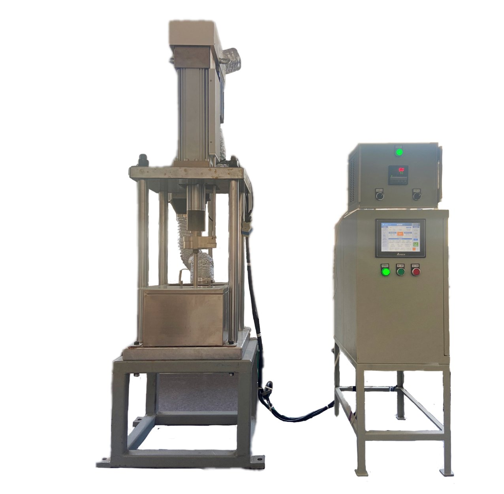
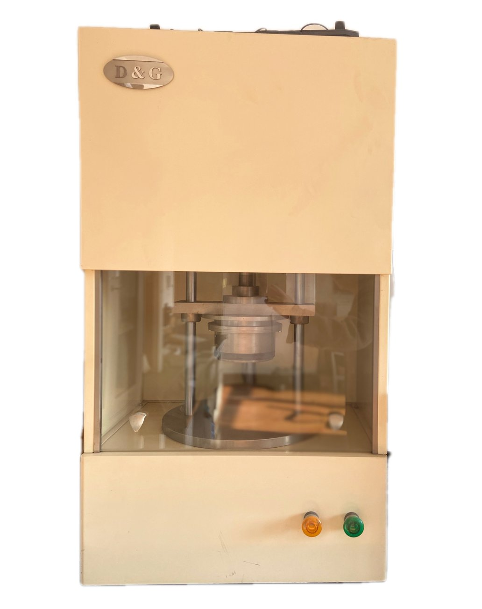
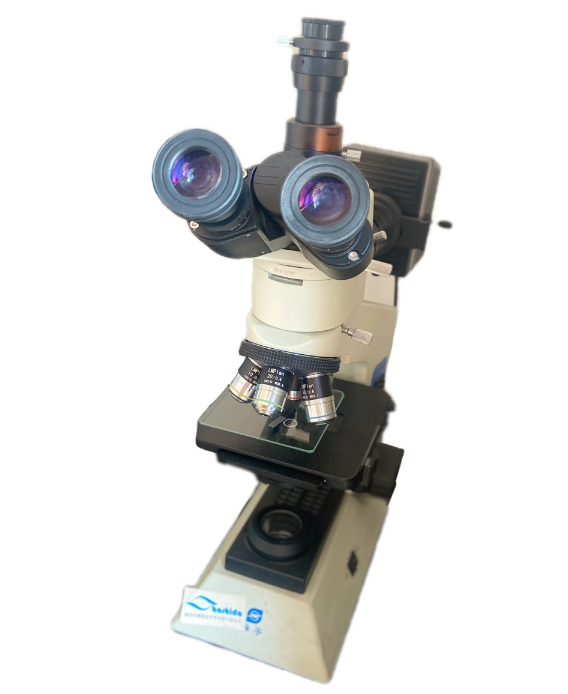
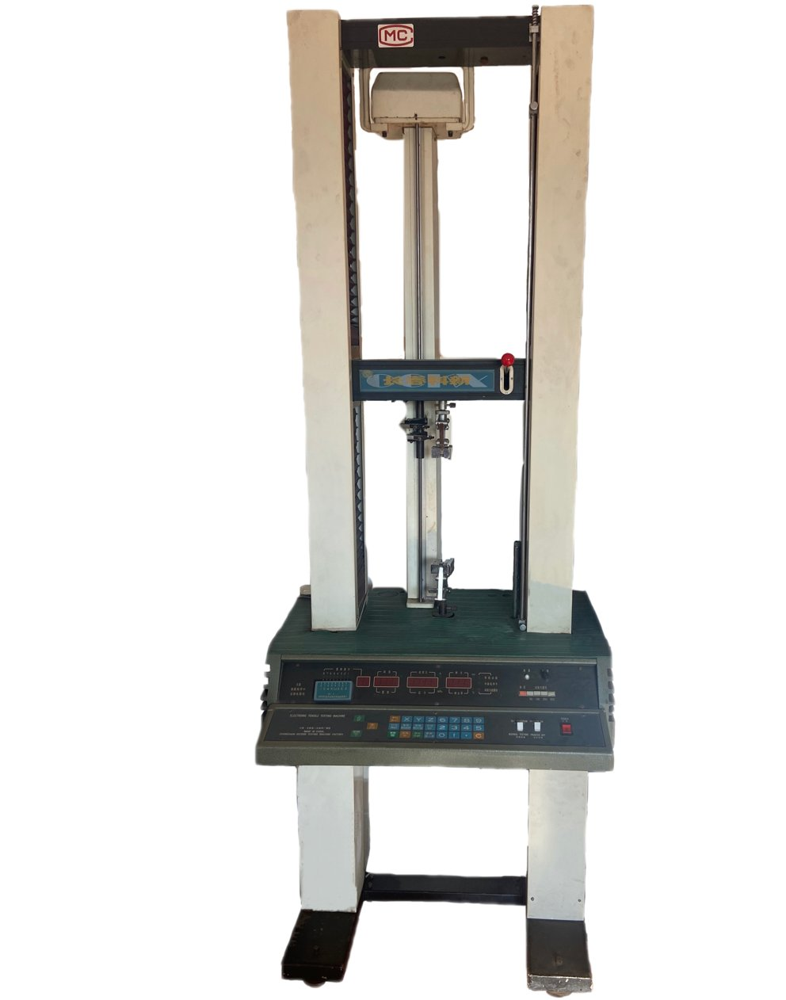
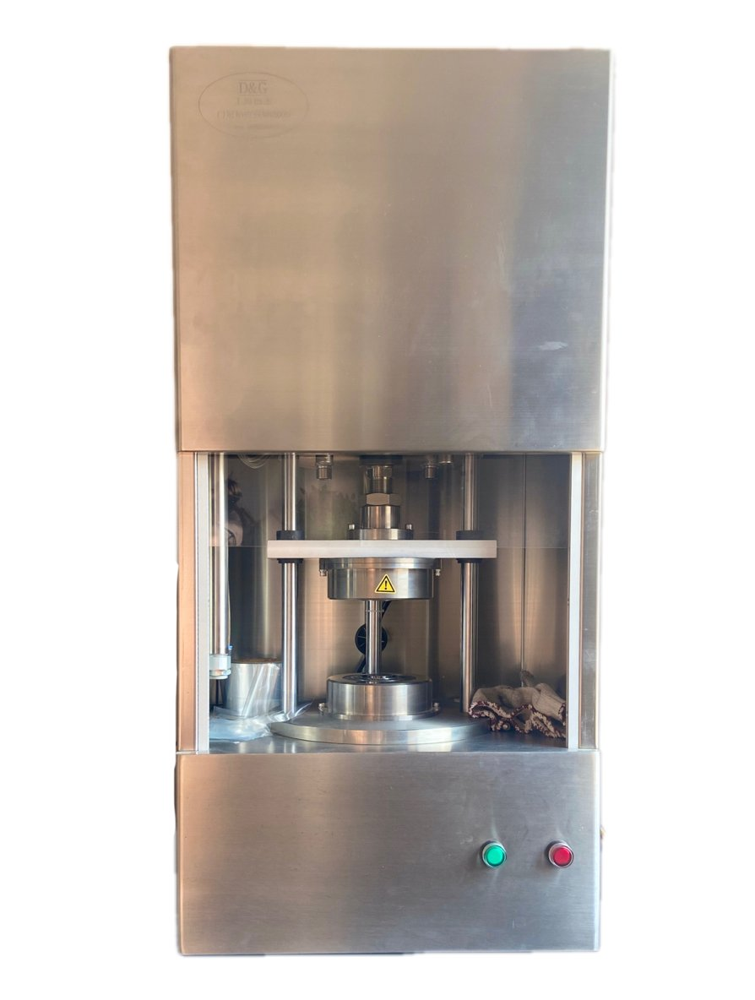

Advanced fluoropolymer processing technology and quality control equipment
Fluoropolymer compression molding can process sheets, rods, sleeves, tapes, sealing rings, diaphragms, and parts with metal inserts. The molding process consists of three steps: preforming, sintering, and cooling.
Preforming: PTFE powder is uniformly loaded into the mold and compressed at room temperature to form a dense preform (blank). The compression ratio should be 4-6 for PTFE, with attention to molding shrinkage rate (typically 2.6-4.5%).
Sintering: The preform is heated above the melting point. Key parameters include:
Cooling: Slow cooling is generally used at 15-25°C/hour. Rapid cooling is only used for special cases such as thin sheets less than 5mm thick or thin-walled tubes from ram extrusion. Post-molding annealing at 100-120°C for 4-6 hours may be required.
PTFE membranes are produced by rolling. The process transforms the material from opaque white to semi-transparent crystalline appearance.
Reheated transparent membrane is rapidly passed through two identical rotating rolls of a calender. Rolling ratio: 1.5-2.5, typical roll speed: 20 rpm.
Sintered and quenched membranes are calendered in multiple directions to gradually reduce membrane thickness. Rolling ratio: 2-2.5. Roll temperature: 150-200°C. Steam pressure (if steam heated): 0.5-0.9 MPa. Multiple rolling passes may be required for optimal results.
PFA (copolymer of tetrafluoroethylene and perfluoroalkyl vinyl ether), a meltable PTFE, can be injection molded.
Due to fluoropolymer processing characteristics, some products require secondary processing. Techniques include:
Similar to metal cutting methods using lathes, drilling machines, and planers. Important: Blanks must be left for 24 hours before machining.
Heat Compression Welding: Heated to above 327°C in special fixtures with applied pressure.
Hot Air Welding: Uses PFA welding rods with heat and pressure to join two parts.
PTFE and FEP (F4 and F46) plastic linings for ferrous metal pipes and fittings, used in chemical corrosion-resistant applications.
Production of corrugated tubes, heat-shrink tubes, and heat-shrink films through continuous or intermittent expansion processes.
Do not damage the sealing surface or sealing line of the seal. Flat seals rely on top and bottom surfaces; hydraulic seals depend on lip lines matching holes or shafts. These areas are made of soft, resilient, temperature-resistant, corrosion-resistant, and aging-resistant materials (graphite, rubber, plastics, fibers) that are easily damaged. Extra care is required during handling, installation, and storage. Damage can leave significant hidden defects in sealed areas.
Some seals are installed in groove-shaped packing glands requiring tight fitting. Do not use rough or forceful installation methods. Forcing installation will destroy the original preformed structure of the seal, similar to how crushed precast concrete used as fill would cause failure. Installation must be careful and meticulous, with gradual, step-by-step insertion.
Position the seal exactly on the effective sealing surface (or lip line). After system startup, further observation and seal tightening follow-up work is needed to prevent micro-leakage and rupture due to changing operating conditions (such as pressure increase).




